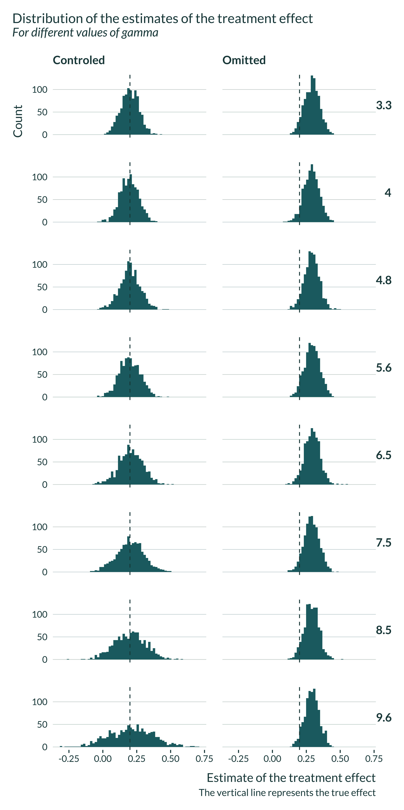
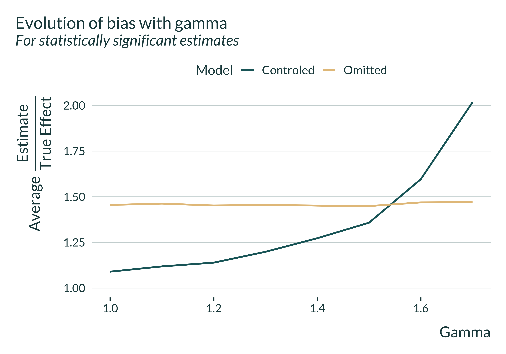
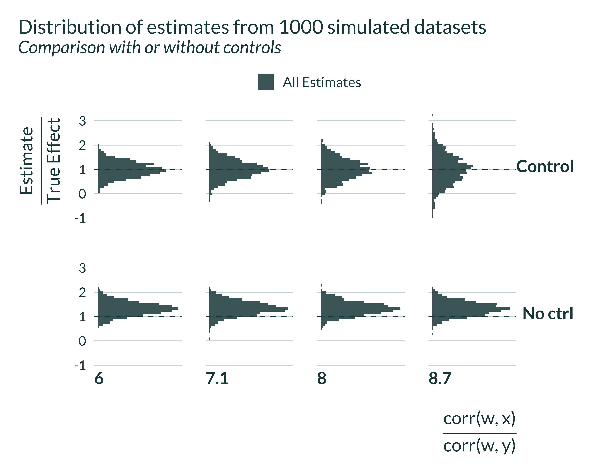
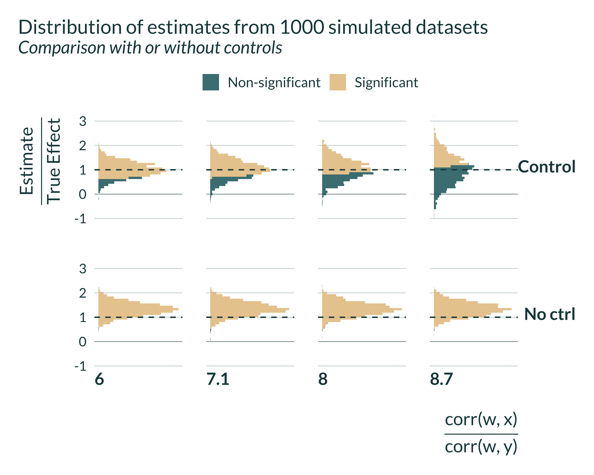
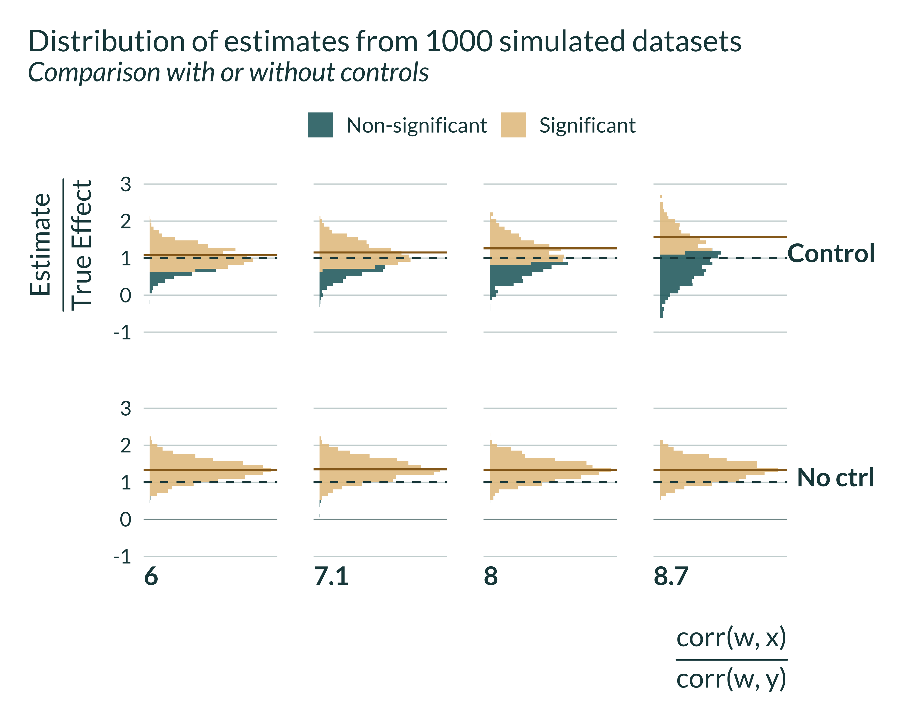

In this document, I run a simulation exercise to illustrate how controling for a confounder can lead to a loss in power and inflated effect sizes.
As discussed in the introduction of the paper and the math section, controlling for confounders can cause a confounding / exaggeration trade-off mediated by the proportion of the variation when the control absorbs more variation in the explanatory variable of interest (\(x\)) than in the outcome variable (\(y\)). Controlling for a variable (\(w\)) is equivalent to partialling out this variable from both \(x\) and \(y\). Since the variance of the estimator is given by the ratio of the variance of the residuals \(\sigma_{y^{\perp x, w}}^2\) over \(n\) times the variance of the explanatory variable after partialling out \(w\) (\(\sigma_{x^{\perp w}}^2\)), if controlling absorbs more of the variance in \(x\) than in \(y\), it will increase the variance of the resulting estimator and create exaggeration.
For readability and to illustrate this exaggeration, let’s consider an example setting that can be thought of as canonical: the impact of climate change (and temperature) on agricultural profits. Usual approaches to explore this question typical rely either on cross-sectional variation (comparing hot areas to cold areas) or use variation over time to compare hot and cold conditions for a given area. The later have been implemented in fear of omitted variable if climate is correlated with other time invariant unobserved variables. A large set of papers investigate this question such as Deschênes and Greenstone (2007), Schlenker and Roberts (2009) or Burke and Emerick (2016).
Approaches As discussed for instance by Burke and Emerick, the
In the present analysis, I build my simulations to replicate a similar setting, measuring the impact of high temperature on agricultural yields. To simplify, I make the assumptions described below. Of course these assumptions are arbitrary and I invite interested readers to play around with them.
More precisely, I set:
I write a simple function that generates the data. It takes as input the values of the different parameters and returns a data frame containing all the variables for this analysis.
Note that, to work with constant \(\sigma_{y}^{2}, \sigma_{x}^{2}, \sigma_{w}^{2} \text{ and } \sigma_{z}^{2}\), I need to define \(\sigma_{u}^{2} \text{ and } \sigma_{\epsilon}^{2}\) as a function of the variances of defined variables:
\[\sigma_{\epsilon}^2 = \sigma_x^2 - \gamma^2\sigma_w^2\]
\[\sigma_{u}^2 = \sigma_y^2 - \beta_1^2\sigma_x^2 - \delta^2\sigma_w^2 - 2 \beta_1\delta\gamma\sigma_w^2\]
These expressions directly follow from the DGP. Note that the parameters space is restricted by the necessity of having positive variances. Hence, \(\sigma_{x}^{2}\) needs to be strictly larger than \(\gamma_{max}^2\sigma_{w}^{2}\) where \(\gamma_{max}\) is the maximum value taken by \(\gamma\) when varying this parameter. Similarly, \(\sigma_{y}^{2}\) needs to be strictly larger than \(\beta_1^2\sigma_x^2 + \frac{\kappa^2}{\gamma_{min}^2}\sigma_w^2 + 2 \beta_1\kappa\sigma_w^2\).
generate_data_controls <- function(N,
mu_x,
sigma_x,
sigma_y,
sigma_w,
beta_0,
beta_1,
gamma,
kappa) {
# gamma <- rho_xw*sigma_x/sigma_w #by def of rho_xw
# delta <- bias*sigma_x/(rho_xw*sigma_w)
delta <- kappa/gamma
data <- tibble(id = 1:N) |>
mutate(
w = rnorm(N, 0, sigma_w),
# sigma_epsilon = sigma_x*(1 - rho_xw^2),
sigma_epsilon = sqrt(sigma_x^2 - gamma^2*sigma_w^2),
epsilon = rnorm(N, 0, sigma_epsilon),
x = mu_x + gamma*w + epsilon,
sigma_u = sqrt(sigma_y^2 - beta_1^2*sigma_x^2 - delta^2*sigma_w^2 - 2*beta_1*delta*gamma*sigma_w^2),
# sigma_u = sqrt(sigma_y^2 - sigma_x^2*(beta_1^2 + 2*beta_1*bias + bias^2*sigma_x^2/rho_xw^2),
u = rnorm(N, 0, sigma_u),
y = beta_0 + beta_1*x + delta*w + u
)
}I then set baseline values for the parameters.
Due to the constrains on the parameters to ensure positive variances, this example required some tuning.
| N | mu_x | sigma_x | sigma_y | sigma_w | beta_0 | beta_1 | gamma | kappa |
|---|---|---|---|---|---|---|---|---|
| 2000 | 1.2 | 2 | 5 | 1.1 | 0.5 | 0.2 | 1 | 0.22 |
Here is an example of data created with the data generating process and baseline parameter values, for 10 observations:
| id | w | sigma_epsilon | epsilon | x | sigma_u | u | y |
|---|---|---|---|---|---|---|---|
| 1 | -1.6286244 | 1.670329 | -1.2990478 | -1.7276722 | 4.967389 | 1.1109140 | 0.9070822 |
| 2 | 1.7348864 | 1.670329 | -2.1612095 | 0.7736769 | 4.967389 | 9.9705509 | 11.0069613 |
| 3 | -1.0524189 | 1.670329 | -1.3021328 | -1.1545517 | 4.967389 | 5.0268942 | 5.0644517 |
| 4 | -1.0120058 | 1.670329 | 0.0199634 | 0.2079576 | 4.967389 | -1.5024328 | -1.1834826 |
| 5 | -2.1974063 | 1.670329 | -0.2545853 | -1.2519916 | 4.967389 | -5.0927902 | -5.3266179 |
| 6 | -0.2995256 | 1.670329 | -1.1750170 | -0.2745426 | 4.967389 | -1.3282045 | -0.9490087 |
| 7 | -0.3468836 | 1.670329 | 1.9858197 | 2.8389361 | 4.967389 | -0.9890353 | 0.0024375 |
| 8 | -0.6910808 | 1.670329 | 0.5687676 | 1.0776869 | 4.967389 | 0.6513370 | 1.2148366 |
| 9 | -0.1171103 | 1.670329 | 0.8468038 | 1.9296935 | 4.967389 | 0.7242448 | 1.5844193 |
| 10 | 0.4708163 | 1.670329 | -0.4899162 | 1.1809001 | 4.967389 | 1.7985164 | 2.6382760 |
I quickly explore a generated data set to get a sense of how the data is distributed.
I then define a function to run the estimation. Since we want to compare the case with and without control, we run both regressions.
estimate_controls <- function(data) {
reg_ctrl <- lm(data = data, y ~ x + w) |>
broom::tidy() |>
filter(term == "x") |>
mutate(model = "ctrl")
reg_ovb <- lm(data = data, y ~ x) |>
broom::tidy() |>
filter(term == "x") |>
mutate(model = "ovb")
reg_ctrl |>
rbind(reg_ovb) |>
select(estimate, se = std.error, p_value = p.value, model) |>
mutate(#to compute corr(x,w)
sigma_epsilon = unique(data$sigma_epsilon),
sigma_u = unique(data$sigma_u)
)
}Here is an example of an output of this function:
| estimate | se | p_value | model | sigma_epsilon | sigma_u |
|---|---|---|---|---|---|
| 0.1819626 | 0.0647417 | 0.0049933 | ctrl | 1.670329 | 4.967389 |
| 0.2513099 | 0.0542734 | 0.0000039 | ovb | 1.670329 | 4.967389 |
We can now run a simulation, combining generate_data_controls and estimate_controls. To do so I create the function compute_sim_controls. This simple function takes as input the various parameters. It returns a table with the model considered, the estimate of the treatment, its p-value and standard error and parameters values.
Here is an example of an output of this function.
| estimate | se | p_value | model | sigma_epsilon | sigma_u | N | mu_x | sigma_x | sigma_y | sigma_w | beta_0 | beta_1 | gamma | kappa |
|---|---|---|---|---|---|---|---|---|---|---|---|---|---|---|
| 0.1577055 | 0.0668747 | 0.0184586 | ctrl | 1.670329 | 4.967389 | 2000 | 1.2 | 2 | 5 | 1.1 | 0.5 | 0.2 | 1 | 0.22 |
| 0.2696471 | 0.0558484 | 0.0000015 | ovb | 1.670329 | 4.967389 | 2000 | 1.2 | 2 | 5 | 1.1 | 0.5 | 0.2 | 1 | 0.22 |
I will run the simulations for different sets of parameters by looping the compute_sim_controls function over the set of parameters. I thus create a table with all the values of the parameters to test, param_controls. Note that in this table each set of parameters appears N_iter times as we want to run the analysis \(n_{iter}\) times for each set of parameters.
I then run the simulations by looping our compute_sim_controls function on param_controls using the purrr package (pmap function).
sim_controls <- pmap(param_controls, compute_sim_controls) |>
list_rbind() |>
as_tibble()
sim_controls <- sim_controls |>
mutate(ratio_gamma_delta = round(1/((1/(gamma^2/kappa) + beta_1)*sigma_x/sigma_y), 1))
# beepr::beep()
# saveRDS(sim_controls, here("Outputs/sim_controls.RDS"))First, I quickly explore the results. I plot the distribution of the estimated effect sizes, along with the true effect. The control estimator is unbiased and recover, on average, the true effect while the OVB one is of course biased and does not recover the true effect:
sim_controls <- readRDS(here("Outputs/sim_controls.RDS"))
sim_controls |>
mutate(model_name = ifelse(model == "ctrl", "Controlled", "Omitted")) |>
ggplot(aes(x = estimate)) +
geom_histogram(bins = 60) +
geom_vline(xintercept = unique(sim_controls$beta_1)) +
# geom_vline(aes(xintercept = 0, linetype = "solid")) +
facet_grid(ratio_gamma_delta ~ model_name) +
labs(
title = "Distribution of the estimates of the treatment effect",
subtitle = "For different values of gamma",
x = "Estimate of the treatment effect",
y = "Count",
caption = "The vertical line represents the true effect"
)
We want to compare \(\mathbb{E}[\widehat{\beta}]/\beta_0\) and \(\mathbb{E}[ \widehat{\beta}|signif]/\beta_0\). The first term represents the normalized bias and the second term represents the exaggeration ratio. These terms depend on the true effect size.
To do so, I use the function summmarise_sim defined in the functions.R file.
source(here("functions.R"), echo = TRUE, local = knitr::knit_global())
> summarise_sim <- function(data, varying_params, true_effect) {
+ ungroup(summarise(group_by(data %>% mutate(signif = (p_value <=
+ 0.05 .... [TRUNCATED] summary_sim_controls <- summarise_sim(
data = sim_controls,
varying_params = c(model, ratio_gamma_delta),
true_effect = beta_1
)
# saveRDS(summary_sim_controls, here("Outputs/summary_sim_controls.RDS"))To analyze our results, I build a unique and simple graph:
summary_sim_controls |>
mutate(model_name = ifelse(model == "ctrl", "Controlled", "Omitted")) |>
ggplot(aes(x = ratio_gamma_delta, y = exag_ratio, color = model_name)) +
geom_line() +
ylim(c(1, NA)) +
labs(
x = expression(frac("cor(w, x)", "cor(w, y)")),
y = expression(paste("Average ", frac("Estimate", "True Effect"))),
title = "Evolution of bias with the correlations of the omitted variable",
subtitle = "For statistically significant estimates, 2000 simulations",
color = "Model"
) +
scale_mediocre_d()
I then graph the distribution of estimates conditional on significativity. It represents the same phenomenon but with additional information.
graph_distrib_ctrl <- sim_controls %>%
# filter(model == "ctrl") |>
mutate(
signif = ifelse(p_value < 0.05, "Significant", "Non-significant"),
ratio_exagg = estimate/beta_1,
model = ifelse(model == "ctrl", "Control", "No ctrl")
) %>%
group_by(ratio_gamma_delta, model) %>%
mutate(
mean_signif = mean(ifelse(p_value < 0.05, ratio_exagg, NA), na.rm = TRUE),
mean_all = mean(ratio_exagg, na.rm = TRUE)
) %>%
ungroup() |>
# filter(between(ratio_exagg, -1, 3)) |>
ggplot(aes(x = ratio_exagg, fill = "All Estimates")) +
# geom_area(stat ="bin", bins = 50, alpha = 0.85) +
facet_grid(model ~ ratio_gamma_delta, switch = "x") +
# geom_vline(xintercept = unique(sim_controls$beta_1)) +
geom_vline(xintercept = 1) +
geom_vline(xintercept = 0, linetype = "solid", linewidth = 0.12) +
scale_x_continuous(breaks = scales::pretty_breaks(n = 6)) +
coord_flip() +
scale_y_continuous(breaks = NULL) +
labs(
y = expression(frac("corr(w, x)", "corr(w, y)")),
x = expression(paste(frac("Estimate", "True Effect"))),
fill = "",
title = "Distribution of estimates from 1000 simulated datasets",
subtitle = "Comparison with or without controls"
# subtitle = "Conditional on significativity",
# caption =
# "The green dashed line represents the result aimed for
# "The brown solid line represents the average of significant estimates"
)
graph_distrib_ctrl +
geom_histogram(bins = 45, alpha = 0.85) 
graph_distrib_ctrl_signif <- graph_distrib_ctrl +
geom_histogram(bins = 45, alpha = 0.85, aes(fill = signif)) +
geom_vline(xintercept = 1)
graph_distrib_ctrl_signif
graph_distrib_ctrl_signif +
geom_vline(
aes(xintercept = mean_signif),
color = "#976B21",
linetype = "solid",
linewidth = 0.5
) 